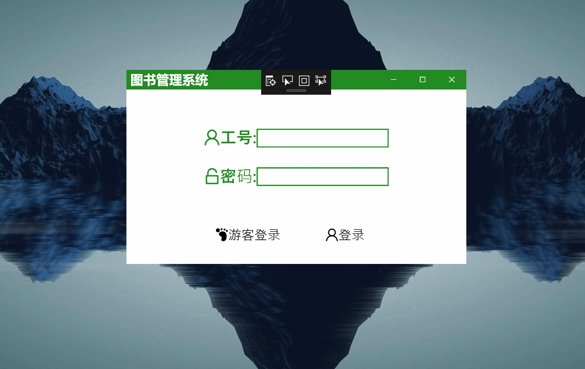

C#小项目效果图
##2020年时期的曾经做过简单的项目，因为找工作，所以拿出来复盘一下。
整体是通过C# WPF 做的，数据库是Mysql。结构采用的最简单的点击式，没有使用MVC框架。 想要完成一个简单的项目，主要是你有你个明确的目标，然后行动。 把自己想成使用者，在基础之上在进行调制即可。
界面+功能+数据库 就可以完成一个简单的项目。
之后在进行载入优化，控制线程，进行优化即可。
效果


资源字典的内容
<ResourceDictionary xmlns="http://schemas.microsoft.com/winfx/2006/xaml/presentation"
xmlns:x="http://schemas.microsoft.com/winfx/2006/xaml"
xmlns:local="clr-namespace:WpfApp3">
<Style x:Key="defaultButton" TargetType="Button">
<Setter Property="Background" Value="Transparent"/>
<Setter Property="BorderThickness" Value="0"/>
<Setter Property="FocusVisualStyle" Value="{x:Null}"/>
<Setter Property="VerticalAlignment" Value="Center"/>
<Setter Property="HorizontalAlignment" Value="Center"/>
<Setter Property="Template">
<Setter.Value>
<ControlTemplate TargetType="Button">
<Grid>
<Border x:Name="border" Margin="8 35 0 0"/>
<ContentPresenter x:Name="contentPresenter" Focusable="False"
HorizontalAlignment="{TemplateBinding HorizontalContentAlignment}"
Margin="{TemplateBinding Padding}" RecognizesAccessKey="True"
SnapsToDevicePixels="{TemplateBinding SnapsToDevicePixels}"
VerticalAlignment="{TemplateBinding VerticalContentAlignment}" />
</Grid>
<ControlTemplate.Triggers>
<Trigger Property="IsMouseOver" Value="True">
<Setter Property="Foreground" Value="ForestGreen"/>
<Setter Property="BorderBrush" Value="ForestGreen" TargetName="border"/>
<Setter Property="BorderThickness" Value="0 0 0 2" TargetName="border"/>
</Trigger>
</ControlTemplate.Triggers>
</ControlTemplate>
</Setter.Value>
</Setter>
</Style>
<Style x:Key="defaultRadioStyle" TargetType="RadioButton" >
<Setter Property="Background" Value="Transparent"/>
<Setter Property="BorderThickness" Value="0"/>
<Setter Property="FocusVisualStyle" Value="{x:Null}"/>
<Setter Property="VerticalAlignment" Value="Center"/>
<Setter Property="HorizontalAlignment" Value="Center"/>
<Setter Property="Template">
<Setter.Value>
<ControlTemplate TargetType="{x:Type RadioButton}">
<Grid x:Name="templateRoot" Background="Transparent" SnapsToDevicePixels="True">
<Border x:Name="border" BorderBrush="Red" BorderThickness="0" SnapsToDevicePixels="True"/>
<Border x:Name="bd2"/>
<ContentPresenter x:Name="contentPresenter" ContentTemplate="{TemplateBinding ContentTemplate}"
Content="{TemplateBinding Content}" Grid.Column="1"
ContentStringFormat="{TemplateBinding ContentStringFormat}" Focusable="False"
HorizontalAlignment="{TemplateBinding HorizontalContentAlignment}"
Margin="{TemplateBinding Padding}" RecognizesAccessKey="True" SnapsToDevicePixels="{TemplateBinding SnapsToDevicePixels}"
VerticalAlignment="{TemplateBinding VerticalContentAlignment}"/>
</Grid>
<ControlTemplate.Triggers>
<Trigger Property="HasContent" Value="True">
<Setter Property="FocusVisualStyle">
<Setter.Value>
<Style>
<Setter Property="Control.Template">
<Setter.Value>
<ControlTemplate>
<Rectangle Margin="14,0,0,0" SnapsToDevicePixels="True" Stroke="{DynamicResource {x:Static SystemColors.ControlTextBrushKey}}" StrokeThickness="1" StrokeDashArray="1 2"/>
</ControlTemplate>
</Setter.Value>
</Setter>
</Style>
</Setter.Value>
</Setter>
<Setter Property="Padding" Value="4,-1,0,0"/>
</Trigger>
<Trigger Property="IsMouseOver" Value="True">
<Setter Property="Background" Value="#F7F7F7" TargetName="border"/>
</Trigger>
<Trigger Property="IsChecked" Value="true">
<Setter Property="FontWeight" Value="Bold" />
<Setter Property="Foreground" Value="{Binding BackColor}"/>
<Setter Property="BorderThickness" Value="4 0 0 0" TargetName="bd2"/>
<Setter Property="BorderBrush" Value="{Binding BackColor}" TargetName="bd2"/>
<Setter Property="Background" Value="{Binding BackColor}" TargetName="border"/>
<Setter Property="Opacity" Value="0.05" TargetName="border"/>
</Trigger>
<Trigger Property="IsChecked" Value="{x:Null}"/>
</ControlTemplate.Triggers>
</ControlTemplate>
</Setter.Value>
</Setter>
</Style>
<Style TargetType="{x:Type ContextMenu}">
<Setter Property="FocusVisualStyle" Value="{x:Null}"/>
<Setter Property="Template">
<Setter.Value>
<ControlTemplate TargetType="ContextMenu">
<Border x:Name="Border" CornerRadius="4" Background="#F5F5F5" BorderThickness="2">
<Border.BorderBrush>
<SolidColorBrush Color="ForestGreen" />
</Border.BorderBrush>
<ItemsPresenter/>
</Border>
<ControlTemplate.Triggers>
<MultiTrigger>
<MultiTrigger.Conditions>
<Condition Property="IsMouseOver" Value="True"/>
</MultiTrigger.Conditions>
<MultiTrigger.EnterActions>
<BeginStoryboard>
<Storyboard>
<DoubleAnimationUsingKeyFrames BeginTime="00:00:00" Storyboard.TargetProperty="(FrameworkElement.Width)">
<SplineDoubleKeyFrame KeyTime="00:00:00.0020000" Value="0"/>
<SplineDoubleKeyFrame KeyTime="00:00:00.3450000" Value="100"/>
</DoubleAnimationUsingKeyFrames>
<DoubleAnimationUsingKeyFrames BeginTime="00:00:00" Storyboard.TargetProperty="(FrameworkElement.Height)">
<SplineDoubleKeyFrame KeyTime="00:00:00.0020000" Value="0"/>
<SplineDoubleKeyFrame KeyTime="00:00:00.3450000" Value="70"/>
</DoubleAnimationUsingKeyFrames>
</Storyboard>
</BeginStoryboard>
</MultiTrigger.EnterActions>
</MultiTrigger>
</ControlTemplate.Triggers>
</ControlTemplate>
</Setter.Value>
</Setter>
</Style>
<Style TargetType="{x:Type MenuItem}">
<Setter Property="Template">
<Setter.Value>
<ControlTemplate TargetType="{x:Type MenuItem}">
<Border Margin="1" MinWidth="80" CornerRadius="5">
<Border.Background>
<SolidColorBrush x:Name="MyAnimatedBrushBackground" Color="Transparent" />
</Border.Background>
<StackPanel Orientation="Horizontal">
<TextBlock Text=" "/>
<ContentPresenter ContentSource="Icon" HorizontalAlignment="Center" VerticalAlignment="Center" />
<TextBlock Text=" "/>
<ContentPresenter ContentSource="Header" HorizontalAlignment="Center" VerticalAlignment="Center"/>
</StackPanel>
</Border>
<ControlTemplate.Triggers>
<MultiTrigger>
<MultiTrigger.Conditions>
<Condition Property="IsMouseOver" Value="True"/>
</MultiTrigger.Conditions>
<MultiTrigger.EnterActions>
<BeginStoryboard>
<Storyboard>
<ColorAnimationUsingKeyFrames BeginTime="00:00:00" Storyboard.TargetName="MyAnimatedBrushBackground" Storyboard.TargetProperty="Color">
<LinearColorKeyFrame Value="Transparent" KeyTime="00:00:00.0020000" />
<LinearColorKeyFrame Value="#7E9C9C9C" KeyTime="00:00:00.0320000" />
</ColorAnimationUsingKeyFrames>
</Storyboard>
</BeginStoryboard>
</MultiTrigger.EnterActions>
<MultiTrigger.ExitActions>
<BeginStoryboard>
<Storyboard>
<ColorAnimationUsingKeyFrames BeginTime="00:00:00" Storyboard.TargetName="MyAnimatedBrushBackground" Storyboard.TargetProperty="Color">
<LinearColorKeyFrame Value="#7E9C9C9C" KeyTime="00:00:00.0020000" />
<LinearColorKeyFrame Value="Transparent" KeyTime="00:00:00.0320000" />
</ColorAnimationUsingKeyFrames>
</Storyboard>
</BeginStoryboard>
</MultiTrigger.ExitActions>
</MultiTrigger>
</ControlTemplate.Triggers>
</ControlTemplate>
</Setter.Value>
</Setter>
</Style>
<Style x:Key="loginButton" TargetType="Button">
<Setter Property="Background" Value="Transparent"/>
<Setter Property="BorderThickness" Value="1"/>
<Setter Property="FocusVisualStyle" Value="{x:Null}"/>
<Setter Property="VerticalAlignment" Value="Center"/>
<Setter Property="HorizontalAlignment" Value="Center"/>
<Setter Property="Template">
<Setter.Value>
<ControlTemplate TargetType="Button">
<Grid>
<Border x:Name="border" Margin="8 35 0 0"/>
<ContentPresenter x:Name="contentPresenter" Focusable="False"
HorizontalAlignment="{TemplateBinding HorizontalContentAlignment}"
Margin="{TemplateBinding Padding}" RecognizesAccessKey="True"
SnapsToDevicePixels="{TemplateBinding SnapsToDevicePixels}"
VerticalAlignment="{TemplateBinding VerticalContentAlignment}" />
</Grid>
<ControlTemplate.Triggers>
<Trigger Property="IsMouseOver" Value="True">
<Setter Property="Foreground" Value="ForestGreen"/>
<Setter Property="BorderBrush" Value="ForestGreen" TargetName="border"/>
<Setter Property="BorderThickness" Value="0 0 0 2" TargetName="border"/>
</Trigger>
</ControlTemplate.Triggers>
</ControlTemplate>
</Setter.Value>
</Setter>
</Style>
<Style x:Key="DataGridStyle" TargetType="DataGrid">
<Setter Property="ColumnHeaderStyle" Value="{DynamicResource ColumnHeaderStyle}"/>
<Setter Property="CellStyle" Value="{DynamicResource CellStyle}"/>
<Setter Property="RowStyle" Value="{DynamicResource RowStyle}"/>
<Setter Property="Background" Value="Transparent"/>
<Setter Property="EnableRowVirtualization" Value="False"/>
<Setter Property="GridLinesVisibility" Value="None"/>
<Setter Property="CanUserAddRows" Value="False"/>
<Setter Property="AutoGenerateColumns" Value="False"/>
<Setter Property="IsEnabled" Value="True"/>
</Style>
<Style x:Key="ColumnHeaderStyle" TargetType="DataGridColumnHeader">
<Setter Property="Height" Value="30"/>
<Setter Property="Background" Value="#F2F2F2"/>
<Setter Property="BorderThickness" Value="1"/>
<Setter Property="BorderBrush" Value="#F2F2F2"/>
<Setter Property="FontSize" Value="30"/>
<Setter Property="VerticalContentAlignment" Value="Center"/>
<Setter Property="HorizontalContentAlignment" Value="Center"/>
</Style>
<Style x:Key="RowStyle" TargetType="DataGridRow">
<Setter Property="Cursor" Value="Hand"/>
<Style.Triggers>
<Trigger Property="IsMouseOver" Value="true">
<Setter Property="Background" Value="#F2F2F2"/>
</Trigger>
<Trigger Property="IsSelected" Value="True">
<Setter Property="Background" Value="#CBCBCB"/>
</Trigger>
</Style.Triggers>
</Style>
<Style x:Key="CellStyle" TargetType="DataGridCell">
<Setter Property="Height" Value="30"/>
<Setter Property="FontSize" Value="13"/>
<Setter Property="Template">
<Setter.Value>
<ControlTemplate TargetType="DataGridCell">
<Border x:Name="Bg" Background="Transparent" BorderThickness="1" UseLayoutRounding="True" BorderBrush="Bisque">
<ContentPresenter HorizontalAlignment="Center" VerticalAlignment="Center"/>
</Border>
</ControlTemplate>
</Setter.Value>
</Setter>
<Style.Triggers>
<Trigger Property="IsSelected" Value="True">
<Setter Property="Background" Value="#CBCBCB"/>
<Setter Property="Foreground" Value="#000000"/>
</Trigger>
</Style.Triggers>
</Style>
<Style x:Key="Header" TargetType="DataGridColumnHeader">
<Setter Property="Foreground" Value="Green"/>
<Setter Property="FontSize" Value="15"/>
<Setter Property="HorizontalAlignment" Value="Center"/>
</Style>
</ResourceDictionary>
资源字典中放的是样式，通过静态引用，改变文本框，按钮的样式等等。主要是看我写了什么。仅供参考。
资源字典怎么引用
找到 App.xaml 文件，然后这么插入。首先我的资源字典名字叫做 Dictionary1.xaml：

把红色框框内容敲入即可，source 内容填的是你的资源字典的名称。填好之后，就可以全局引用。
下一节我将讲一下我如何通过不同的登陆方式设置权限（很简单的方式，菜鸟级别）。